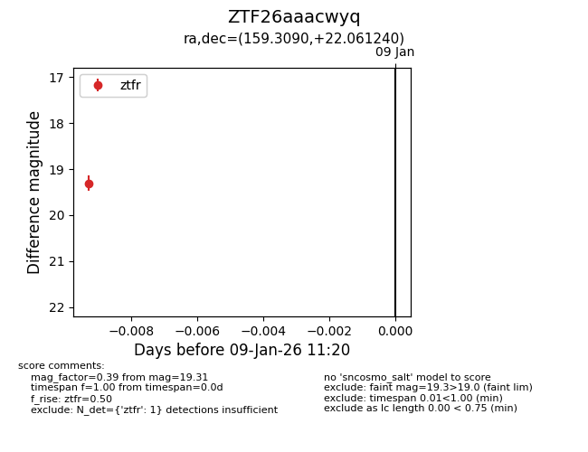
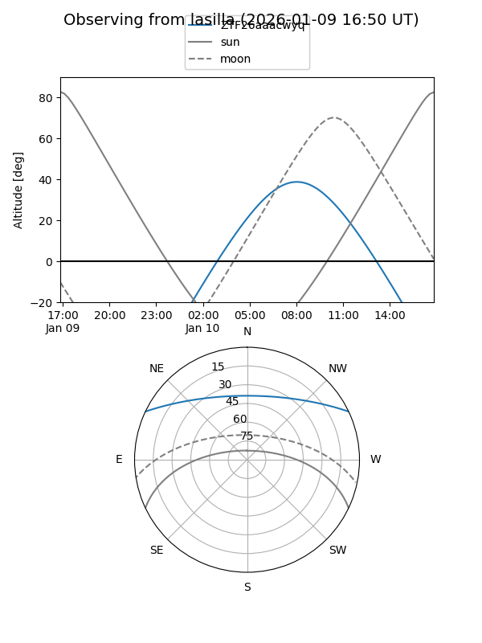
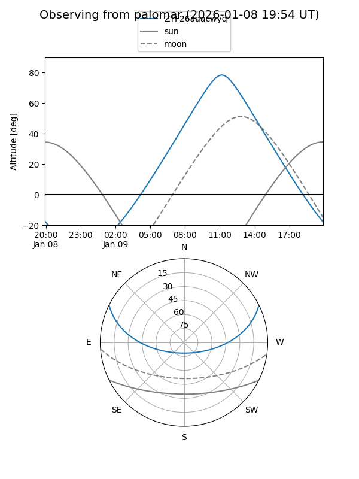

ZTF26aaacwyq
Target ZTF26aaacwyq at 2026-01-09 11:23
Aliases and brokers:
FINK:
Lasair:
ALeRCE:
alt names
ZTF26aaacwyq (ztf,fink_ztf)
Coordinates:
equatorial (ra, dec) = 159.3090,+22.06124
equatorial (HMS+DMS) = 10:37:14.15,+22:03:40.46
galactic (l, b) = (214.9352,+59.16817)
Flags:
Photometry:
last ztfr=19.31
1 ztfr detections
Lightcurve

Visibility


Additional plots